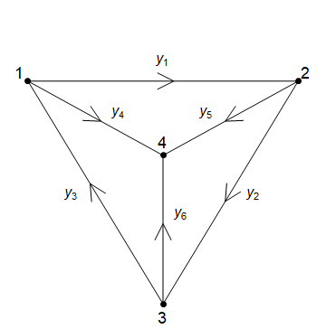

Linear Algebra - Problem Sheet 1¶
Question 1¶
Solve the following system of linear equations by transforming its augmented matrix to reduced echelon form. Which are the free variables and pivot variables? Write your answer in parametric vector form and describe the solution geometrially.
Question 2¶
1. Reduce \(A\) and \(B\) to row echelon form. Which variables are free?
a) \(A = \begin{pmatrix} 1 & 2 & 2 & 4 & 6\\ 1 & 2 & 3 & 6 & 9\\ 0 & 0 & 1 & 2 & 3 \end{pmatrix}\) b) \(B = \begin{pmatrix} 2 & 4 & 2\\ 0 & 4 & 4\\ 0 & 8 & 8\\ \end{pmatrix}\)
2. For the matrices \(A\) and \(B\), find a special solution for each free variable.
3. Calculate the null space of each matrix.
4. True or False, with explanation: The null space of a matrix is the same as the null space of its reduced echelon form.
Question 3¶
Kirchoff’s Law states that at a junction of an electrical circuit \(\mathrm{current~in}=\mathrm{current~out}\). At junction \(1\) this says that \(y_3 = y_1+y_4\).
{kind=link}
Write the four equations for Kirchoff’s Law at each of the four nodes.
Reduce the resulting matrix to reduced row echelon form.
Write down the three special solutions.
Calculate the full solution to the system in vector form.
Question 4¶
Find a cubic polynomial
such that \(p(1) = 1, p'(1)=5, p(-1)=3\) and \(p'(-1)=1\).
Question 5¶
1. Find all matrices
such that \(AB=BA\).
2. Use your answer to part 1 to find a \((2 \times 2)\) matrix \(C\) such that \(AC\neq CA\).
Question 6¶
Let
We can reduce \(M\) to reduced row echelon form by perform a sequence of elementary row operations. The first elementary row operation is \(r_2 + 2r_1 \rightarrow r_2\).
An elementary matrix is a matrix which has the same effect as an elementary row operation. For example, left-multiplying by
has the same effect as the elementary row operation \(r_2 + 2r_1 \rightarrow r_2\).
1. Calculate \(E_1M\) to show that left-multiplying by \(E_1\) has the same effect as the elementary row operation on the matrix \(M\).
2. Determine the elementary matrix \(E_2\) that has the same effect as the elementary row operation \(r_2 \leftrightarrow r_3\), then calculate \(E_2\left(E_1M\right)\).
3. Determine the remaining two elementary row operations that reduce the matrix \(M\) to row reduced form and calculate the elementary matrices \(E_3\) and \(E_4\).
4. Calculate the matrix \(A = \left(\left(\left(E_4\right)E_3\right)E_2\right)E_1\) and check that